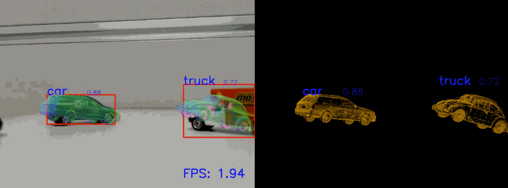

Procedural video understanding, action forecasting, egocentric perception, and visual planning for human assistance.
7 papers
ICCVWACVIROS
Multimodal & Cross-Modal Learning
Fusing information across vision, audio, language, and gaze modalities for richer representations and generation.
8 papers
CVPRICASSPICCVIUI
Representation Learning & Neural Dynamics
Anytime prediction, few-shot and continual learning, attractor networks, and biologically-inspired temporal processing.
7 papers
NeurIPSPatent
Collective Intelligence & Bio-Inspired Systems
Honeybee swarm communication, firefly classification, and collective behavior modeling through agent-based simulation.
6 papers
PNASSci. ReportsACM CI
Other Projects
Computer graphics, space habitat design, and other creative explorations.
2 projects
Video Understanding & Visual Planning
WACV 2026
Enhancing Visual Planning with Auxiliary Tasks and Multi-Token Prediction
Ce Zhang, Yale Song, Ruta Desai, Michael L. Iuzzolino, Joseph Tighe, Gedas Bertasius, Satwik Kottur
VideoPlan addresses two key challenges in visual planning: limited procedural training data and inefficient prediction methods. The approach introduces auxiliary task augmentation and multi-token prediction techniques, achieving improved performance on standard benchmarks like COIN and CrossTask datasets.
EgoToM: Benchmarking Theory of Mind Reasoning from Egocentric Videos
Yuxuan Li, Vijay Veerabadran, Michael L. Iuzzolino, Bradley D. Roads, Asli Celikyilmaz, Karl Ridgeway
A benchmark for evaluating AI systems' abilities to understand human mental states through egocentric video analysis — reasoning about beliefs, intentions, and goals from first-person perspectives.
Pretrained Language Models as Visual Planners for Human Assistance
Dhruvesh Patel, Hamid Eghbalzadeh, Nitin Kamra, Michael L. Iuzzolino, Unnat Jain, Ruta Desai
VLaMP leverages pre-trained language models as sequence models for visual planning, generating action sequences to guide users toward complex multi-step goals using both video analysis and natural language input.
Multiscale Video Pretraining for Long-Term Activity Forecasting
Reuben Tan, Matthias De Lange, Michael Iuzzolino, Bryan A. Plummer, Kate Saenko, Karl Ridgeway, Lorenzo Torresani
MVP is a self-supervised learning method that helps models understand temporal patterns in videos across different time scales. The approach learns to forecast future video representations and demonstrates significant improvements on activity prediction tasks, with gains exceeding 20% accuracy on certain benchmarks.
Action Dynamics Task Graphs for Learning Plannable Representations of Procedural Tasks
Weichao Mao, Ruta Desai, Michael L. Iuzzolino, Nitin Kamra
A method for extracting task structure from video demonstrations paired with narrations of procedural activities. Creates structured representations enabling task understanding in unseen videos, action recommendations, and sequence planning.
EgoAdapt: A Multi-Stream Evaluation Study of Adaptation to Real-World Egocentric User Video
Matthias De Lange, Hamid Eghbalzadeh, Reuben Tan, Michael Iuzzolino, Franziska Meier, Karl Ridgeway
A multi-stream evaluation study examining how models adapt to real-world egocentric user video, benchmarking adaptation strategies across different data streams and user scenarios.
Virtual-to-Real-World Transfer Learning for Robots on Wilderness Trails
Michael L. Iuzzolino, Michael E. Walker, Daniel Szafir
Explores virtual-to-real-world transfer learning using deep learning models trained to classify trail direction from images. Utilizes synthetic data from virtual environments, bypassing the need to collect large amounts of real outdoor images. Demonstrates classification accuracies upwards of 95% on synthetic data.
Multimodal Generative Recommendation for Fusing Semantic and Collaborative Signals
Moritz Vandenhirtz, Kaveh Hassani, Sima Ghasemlou, Shawn Shao, Hamid Eghbalzadeh, Michael Iuzzolino, et al.
A multimodal generative approach for recommendation systems that fuses semantic understanding with collaborative filtering signals for improved recommendations.
Gaze-Language Alignment for Zero-Shot Prediction of Visual Search Targets from Human Gaze Scanpaths
Soham Mondal, Naveen Sendhilnathan, Ting Zhang, Yupei Liu, Michael Proulx, Michael L. Iuzzolino, et al.
Aligns gaze scanpath data with language representations for zero-shot prediction of what users are searching for visually, bridging eye-tracking and natural language understanding.
ICCV 2025
Synthetic Captions for Open-Vocabulary Zero-Shot Segmentation
Thomas Lebailly, Vijay Veerabadran, Satwik Kottur, Karl Ridgeway, Michael L. Iuzzolino
Leverages synthetically generated captions for open-vocabulary zero-shot segmentation, enabling models to segment objects from categories not seen during training.
IUI 2025
Less or More: Towards Glanceable Explanations for LLM Recommendations Using Ultra-Small Devices
Explores how to present AI-generated explanations effectively on devices with limited screen space, such as smartwatches, through structured text formatting and adaptive presentation strategies.
Hamid Reza Vaezi Joze, Amirreza Shaban, Michael L. Iuzzolino, Kazuhito Koishida
A simple neural network module for leveraging knowledge from multiple modalities in convolutional neural networks. The Multimodal Transfer Module (MMTM) can be added at different levels of the feature hierarchy, enabling slow modality fusion. Using squeeze and excitation operations, MMTM recalibrates channel-wise features. State-of-the-art performance on gesture recognition, speech enhancement, and action recognition. 534+ citations.
A new mechanism for audio-visual fusion that leverages a cross-modal squeeze-excitation block for speech enhancement. The fusion block is adaptable to any feature layer and significantly reduces model parameters compared to standard AV fusion methods without loss of performance.
Patent for audio-visual speech enhancement methods using cross-modal squeeze-excitation mechanisms to improve speech intelligibility in noisy environments.
Microsoft Research
Real-Time 3D Object Retrieval and Pose Estimation from 2D RGB Images
Fast, simultaneous 3D model retrieval and pose estimation from single RGB images utilizing multi-view deep metric learning and fully convolutional networks. The method is category-agnostic, scalable, and allows for real-time 3D-model-to-real-object alignment.

Representation Learning & Neural Dynamics
NeurIPS 2021
Improving Anytime Prediction with Parallel Cascaded Networks and a Temporal-Difference Loss
Michael Iuzzolino, Michael C. Mozer, Samy Bengio
A biologically-inspired architecture where information propagates from neurons at all layers in parallel but transmission occurs gradually over time, leading to speed-accuracy trade-offs. The cascaded ResNet approach uses a novel temporal-difference training loss and enables predictions that improve as internal processing time increases.
Michael C. Mozer, Michael L. Iuzzolino, Samy Bengio
Patent application for the parallel cascaded neural network architecture enabling anytime prediction with speed-accuracy trade-offs.
arXiv 2021
Online Unsupervised Learning of Visual Representations and Categories
Mengye Ren, Tyler R. Scott, Michael L. Iuzzolino, Michael C. Mozer, Richard Zemel
A prototype-based memory network that concurrently learns visual representations and identifies new object categories from sequential, nonstationary data streams without class labels. Uses contrastive learning to group different views while forming categorical prototypes from minimal examples.
Wandering Within a World: Online Contextualized Few-Shot Learning
Mengye Ren, Michael L. Iuzzolino, Michael C. Mozer, Richard S. Zemel
Extends few-shot learning to an online, continual setting where an underlying context changes throughout time. Introduces a new few-shot learning dataset based on large-scale indoor imagery that mimics the visual experience of an agent wandering within a world.
In Automation We Trust: Investigating the Role of Uncertainty in Active Learning Systems
Michael L. Iuzzolino, Takeo Umada, Nisar R. Ahmed, Daniel A. Szafir
An empirical study evaluating how active learning query policies and uncertainty visualizations influence analyst trust in automated classification of image data. Found that query policy significantly influences trust in image classification systems.
Michael Iuzzolino, Yehonatan Singer, Michael C. Mozer
Revisits attractor networks in light of modern deep learning methods and proposes a convolutional bipartite architecture with a novel training loss, activation function, and connectivity constraints. Demonstrates potential for image completion and super-resolution.
Fully Bayesian Human-Machine Data Fusion for Robust Dynamic Target Surveillance
Jacob Muesing, Luke Burks, Michael Iuzzolino, Daniel Szafir, Nisar R. Ahmed
A hierarchical fully Bayesian probabilistic model that explicitly accounts for uncertainties in 'human sensor' quality and Markovian conditional dependencies. Performs online Bayesian inference via Gibbs sampling to simultaneously calibrate human sensor characteristics and estimate target states.
Embracing Firefly Flash Pattern Variability with Data-Driven Species Classification
Orit Martin, Canh Nguyen, Raphaël Sarfati, Manaswi Chowdhury, Michael L. Iuzzolino, Dieu My T. Nguyen, et al.
Data-driven approaches for classifying firefly species based on their bioluminescent flash patterns, embracing natural variability rather than relying on idealized templates.
ACM Collective Intelligence 2023
Gone With the Wind: Honey Bee Collective Scenting in the Presence of External Wind
Dieu My T. Nguyen, Golnar Gharooni Fard, Michael L. Iuzzolino, Orit Peleg
Investigates how external wind conditions affect collective scenting behavior in honeybee swarms and the resilience of pheromone-based communication.
Artificial Life and Robotics 2023
Honey Bees Find the Shortest Path: A Collective Flow-Mediated Approach
Dieu My T. Nguyen, Golnar G. Fard, Autumn Atkins, Peter Bontempo, Michael L. Iuzzolino, Orit Peleg
Investigates how honeybee swarms collectively solve shortest-path problems through flow-mediated pheromone communication mechanisms.
Artificial Life and Robotics 2022
Robustness of Collective Scenting in the Presence of Physical Obstacles
Dieu My T. Nguyen, Golnar G. Fard, Michael L. Iuzzolino, Orit Peleg
Examines how physical obstacles affect the robustness of collective scenting behavior in honeybee swarms and the resilience of pheromone-based communication networks.
ALIFE 2022
Physical Obstacles Constrain Behavioral Parameter Space of Successful Localization in Honey Bee Swarms
Dieu My T. Nguyen, Michael L. Iuzzolino, Orit Peleg
Explores how physical obstacles constrain the behavioral parameter space available to honeybee swarms for successful scent-based localization.
PNAS 2021
Flow-Mediated Olfactory Communication in Honeybee Swarms
Dieu My T. Nguyen, Michael L. Iuzzolino, A. Mankel, K. Bozek, G.J. Stephens, Orit Peleg
Bee detection and classification using deep learning, combined with agent-based modeling of honeybee swarm communication patterns through flow-mediated pheromone signaling. Published in the Proceedings of the National Academy of Sciences.